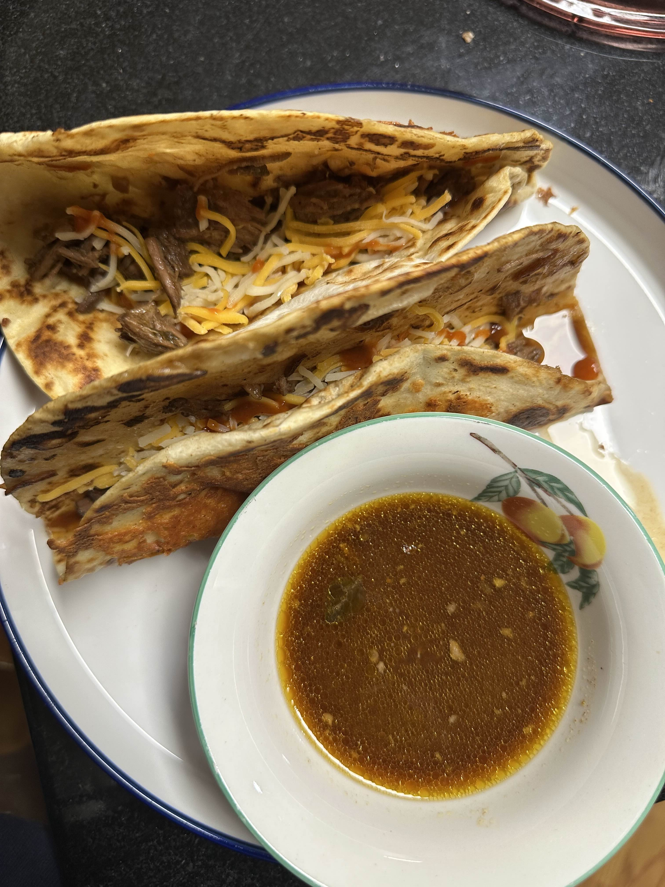

MY
COOKBOOK
Home
Recipes
About
Birria Tacos
Back

Ingredients
PREP TIME: 30 minutes
COOK TIME: 8 hours
1 lbs boneless chuck roast
1 tablespoon avocado oil or neutral oil , (plus more for taco frying)
coarse ground salt and fresh ground pepper
1 dried Guajillo chiles
seeded
1 dried Ancho chiles
seeded
1 small red onion, thinly sliced
4 whole cloves garlic, smashed
2 cups beef broth
1 tablespoon ground cumin
1 tablespoon dried oregano
1 teaspoon smoked paprika
Instructions
Cut roast into chunks
Add beef, chiles, and ALL ingredients to the crockpot
Cook on low for 8 hours
Shred the beef and serve like tacos